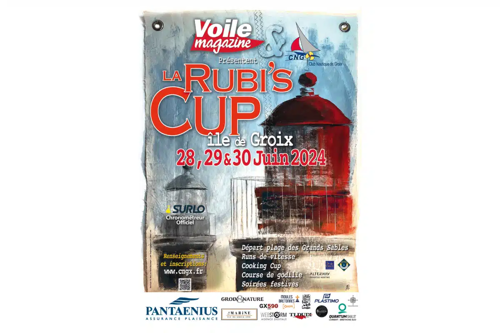

<div class="boat-card">
    <div style="display: grid; grid-template-columns: 50% 50%;">
         <!-- width="300px"> -->
        <div style="padding: 14px;">
            <h2>Rubi's Cup - 2024</h2>
            <p>
                Passe-Coque will be in Port-Tudy
                for the <a href="https://www.cngx.fr/actualites/">Rubi's Cup</a> of 2024.
            </p>
        </div>
    </div>
    <div>
        <div>
            <h3>7 boats will represent Passe-Coque at the Rubi's Cup!</h3>
            In a mess:
            <ul>
                <li><b><a href="/?lang=EN&nav-to=4&boat-id=pordin-nancq" target="new">Pordin Nancq</a></b> Carter 37, with Jimmy, José, Fanfan, Didier, Alain</li>
                <li><b><a href="/?lang=EN&nav-to=4&boat-id=bemol" target="new">B&eacute;mol III</a></b> Sun Rise 35, with PJJ Kacha R&eacute;gis</li>
                <li><b><a href="/?lang=EN&nav-to=4&boat-id=zephir" target="new">Z&eacute;phir</a></b> Birvidic 700, with Olivier and Corine</li>
                <li><b><a href="/?lang=EN&nav-to=4&boat-id=ma-enez" target="new">Ma Enez</a></b> Symphonie, with Alain, Eric, Jean, and Luc</li>
                <li><b><a href="/?lang=EN&nav-to=4&boat-id=trehudal" target="new">Trehudal</a></b> </b>, with Jean Christophe, Guy and R&eacute;mi</li>
                <li><b><a href="/?lang=EN&nav-to=4&boat-id=eh-tak" target="new">Eh'Tak</a></b> Shipman 28, with Tiago</li>
                <li><b><a href="/?lang=EN&nav-to=4&boat-id=saudade" target="new">Saudade</a></b> Voiles Mag's Super Arlequin, with Fx and Damien</li>
            </ul>
        </div>
    </div>
    <div style="line-height: 1.2em;">
        <!--Ce projet est en cours de d&eacute;veloppement, on aura bient&ocirc;t plus de d&eacute;tails &agrave; son sujet ici.-->
    </div>
    <hr/>
</div>
